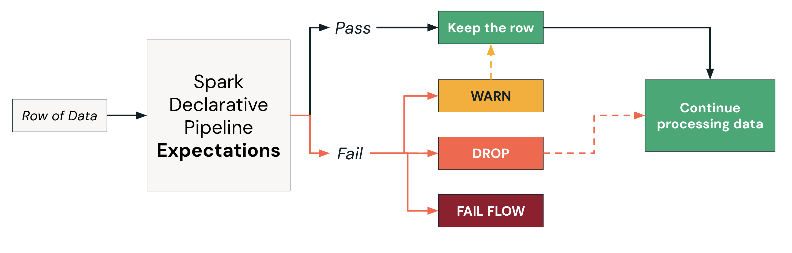

Section 3 · Data Transformation and Modelling · Quelle: Kurs 3, Kapitel 6–8
Fehlerhafte oder unerwartete Daten schleichen sich in fast jede Pipeline ein – ein leeres Pflichtfeld, ein ungültiger Statuscode, ein Datum in der Zukunft. Lakeflow Declarative Pipelines bietet mit Expectations ein eingebautes Werkzeug, um solche Datenqualitätsregeln direkt im Pipeline-Code zu definieren und automatisch durchzusetzen – ganz ohne separates Validierungs-Framework.
Eine Expectation ist eine SQL-Bedingung, die für jede Zeile geprüft wird, während sie die Pipeline durchläuft. Wird die Bedingung erfüllt, läuft die Verarbeitung normal weiter. Wird sie verletzt, entscheidet die konfigurierte Verletzungsaktion darüber, was mit der betroffenen Zeile geschieht. Definiert werden Expectations über die CONSTRAINT ... EXPECT (...)-Syntax direkt in der Tabellendefinition.
| Aktion | Verhalten bei Verletzung | Typischer Einsatz |
|---|---|---|
| WARN (Standard) | Verstoß wird protokolliert, die Zeile bleibt aber im Ergebnis erhalten, Pipeline läuft normal weiter | Nicht-kritische Qualitätsüberwachung, ohne den Betrieb zu unterbrechen |
| DROP ROW | Die betroffene Zeile wird verworfen, die Anzahl wird protokolliert, restliche Verarbeitung läuft weiter | Fehlerhafte Daten sollen ausgeschlossen werden, ohne den Lauf zu stoppen |
| FAIL UPDATE | Der betroffene Flow wird sofort gestoppt; manuelles Eingreifen erforderlich, andere Flows bleiben unberührt | Kritische Datenprobleme, die zwingend behoben werden müssen, bevor es weitergeht |
Mehrere Constraints können gleichzeitig auf einer Tabelle definiert werden und werden unabhängig voneinander ausgewertet – so lässt sich eine feingranulare, mehrschichtige Qualitätskontrolle über alle relevanten Spalten hinweg aufbauen.
Das folgende Beispiel zeigt, wie sich alle drei Verletzungsaktionen gemeinsam auf einer Silver-Tabelle einsetzen lassen – jede Spalte erhält dabei die für sie passende Strenge:
CREATE OR REFRESH STREAMING TABLE orders_silver (
CONSTRAINT valid_notifications EXPECT (notifications IN ('Y', 'N')),
CONSTRAINT valid_date EXPECT (order_timestamp > '2021-12-26') ON VIOLATION DROP ROW,
CONSTRAINT valid_id EXPECT (customer_id IS NOT NULL) ON VIOLATION FAIL UPDATE
)
AS
SELECT order_id,
timestamp(order_timestamp) AS order_timestamp,
customer_id,
notifications
FROM STREAM orders_bronze;
In diesem Beispiel wird valid_notifications ohne explizite ON VIOLATION-Angabe definiert – das entspricht automatisch dem Standardverhalten WARN. Bei einem echten Testlauf mit Beispieldaten ergab sich folgendes Bild: Von 174 eingelesenen Zeilen wurden 26 wegen eines ungültigen Datums verworfen (DROP ROW) und 39 lösten eine Warnung wegen eines ungültigen Notifications-Werts aus (WARN, Zeile bleibt erhalten) – am Ende standen 148 Zeilen in der Zieltabelle.
Der Ablauf pro Zeile lässt sich in zwei Schritten zusammenfassen: Eine Zeile tritt in die Pipeline ein und wird gegen alle definierten Expectations geprüft. Besteht sie alle Prüfungen, wird sie normal weiterverarbeitet. Schlägt eine Prüfung fehl, greift die für diesen Constraint konfigurierte Aktion – unabhängig davon, was mit anderen Zeilen oder anderen Flows in derselben Pipeline passiert.

Nach einem Pipeline-Lauf lassen sich die Ergebnisse jeder Expectation im Editor direkt einsehen – etwa über die Table metrics eines Datensatzes: Anzahl der Ausgabezeilen, wie viele Expectations erfüllt bzw. verletzt wurden, sowie eine Aufschlüsselung nach Constraint mit Ausfallquote. Für eine langfristige Auswertung über mehrere Läufe hinweg (z. B. um Qualitätstrends zu erkennen) empfiehlt sich das Abfragen des Pipeline-Event-Logs, das strukturierte Datenqualitäts-Metriken pro Lauf enthält.
expect entspricht der WARN-Aktion (Zeile bleibt erhalten, Metriken werden erfasst), während expect_or_drop der DROP-ROW-Aktion entspricht und verhindert, dass ungültige Zeilen weiterverarbeitet werden. Das Pipeline-Event-Log gilt als zentrales Beobachtbarkeits-Werkzeug: Jeder Lauf schreibt strukturierte Datensätze zu Ausführungsfortschritt, Datenqualitätsergebnissen, Daten-Lineage und Fehlerdetails – das details-Feld enthält dabei unter anderem eine JSON-Struktur mit Bestanden-/Fehlgeschlagen-Zählern pro Constraint, die sich für Trendanalysen und Alarmierung eignet.